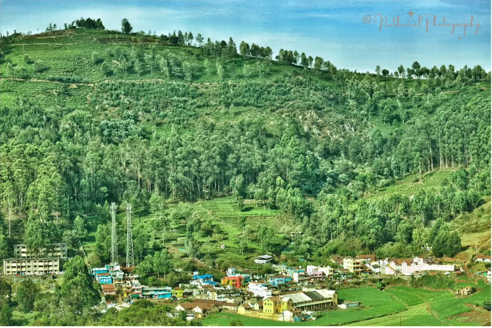

Welcome to Ooty
The Queen of Hill Stations
Home
Mumabi
Ooty
Hyderabad
Coimbatore
Vizag

Ooty one of the well known hill stations in the southern India located in the state called Tamilnadu is famous for it's tea production and beautiful land scapes however various wildlife is part of Ooty.